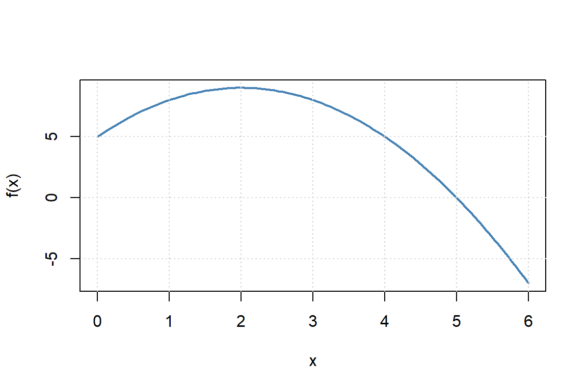
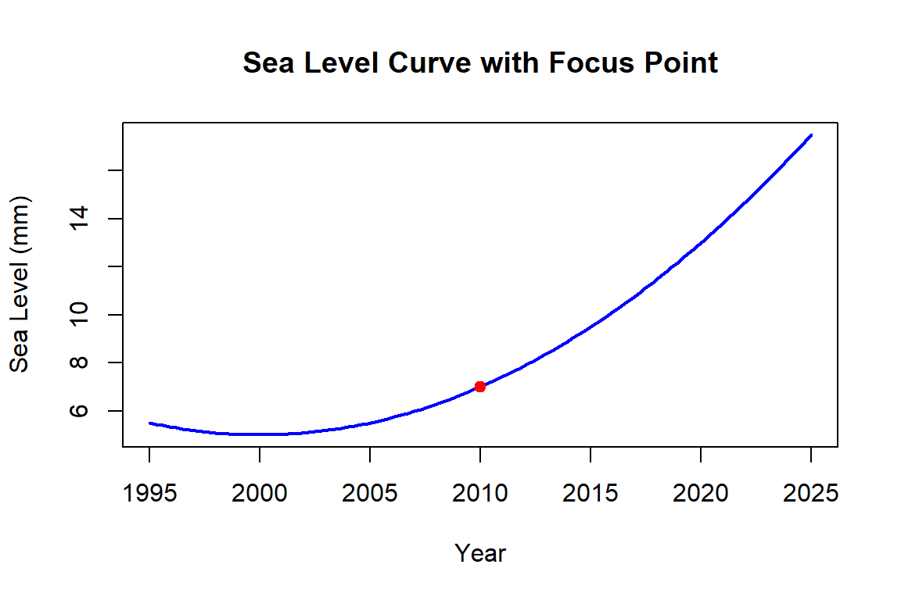
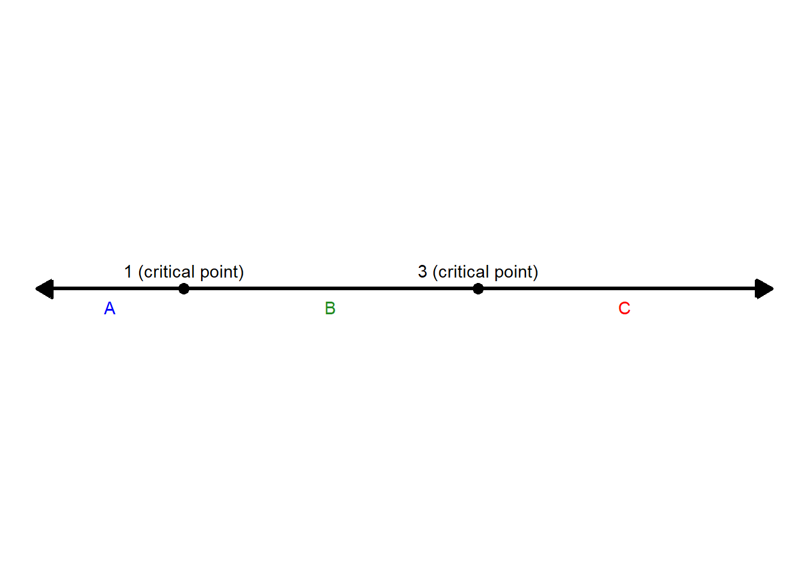
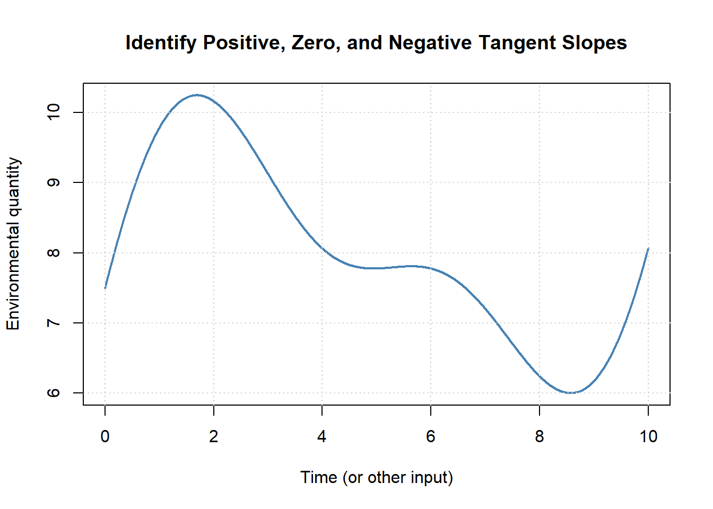
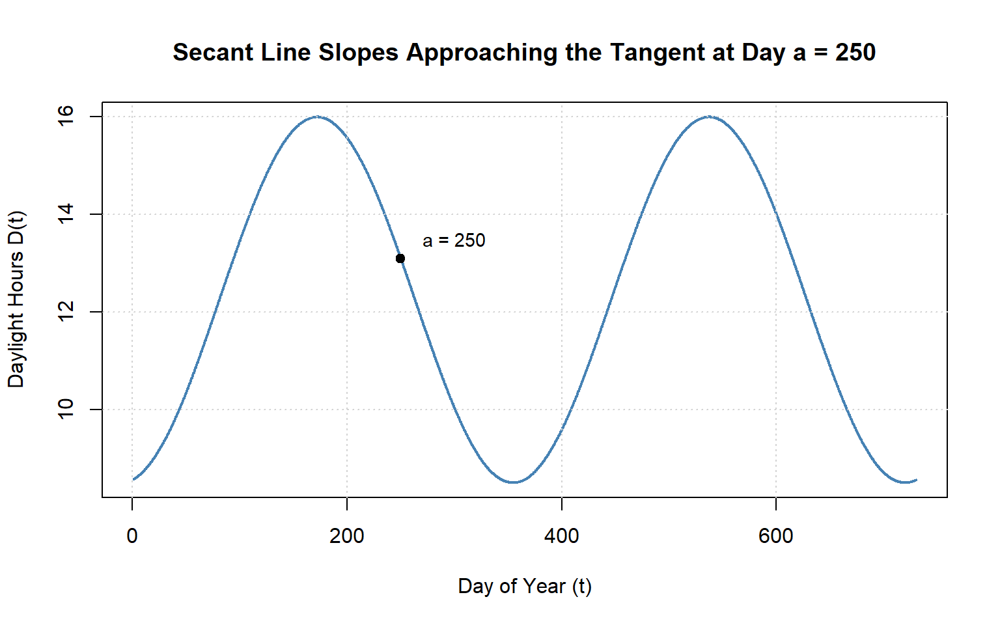

Chapter 9 Introduction to Derivatives — Workbook
9.1 Learning Objectives (Quick Self-Check)
Check your readiness:
For each objective, write one sentence in your own words or a question you still have:
- What is the difference between an average rate of change and an instantaneous rate of change?
- How can you interpret a derivative from a graph, dataset, or equation?
- What does derivative notation mean, and how does it connect to context?
- How could you apply derivatives to a real-world environmental example?
Notes:
9.2 Understanding the Speed of Change
A derivative is about how fast something is changing, right now, and in what direction.
9.2.1 Class Brainstorm: What’s Changing?
Activity:
Shared Google Doc
As a group, pick an environmental system you are interested in (e.g. Lake Washington).
Discuss:
- What quantity is changing in that system?
- What is it changing with respect to (time, distance, depth, etc.)?
- Why might the speed of change matter for scientists, managers, or communities?
- Rinse and repeat, can you think of another quantity or variable that is changing in your system?
- What quantity is changing in that system?
Share your group’s example with the class.
Notes:
9.2.2 Average vs Right-Now: Build the Contrast
Practice:
Using your scenario:
- What average rate of change could you compute between two times?
- What would the instantaneous rate tell you “right now”?
- How would the decisions based on these two rates differ?
Notes:
9.2.3 Graph Interpretation: Slope as a Story
Activity (no equations needed):
Sketch a simple curve of your quantity vs. its input (e.g., population vs. time).
- Mark one place slope is positive (increase).
- Mark one place slope is near zero (flat).
- Mark one place slope is negative (decrease).
- For each mark, write a one-sentence story of what’s happening.
- What does the steepness tell you about your quantity?
Notes:
9.3 Why We Need New Math Tools
9.3.1 Compare: Snapshots vs. Speed
Activity (Whole Class Scenario + Small Groups):
Scenario:
A coastal city is monitoring sea level rise to plan future flood defenses.
- Snapshot: “Sea level is currently 1.2 meters above the baseline.”
- Speed: “Sea level is rising at 4 mm per year.”
Step 1: Snapshot vs. Speed
- What can the snapshot alone tell the city planners?
- What critical information is missing if they only have the snapshot?
- How does the speed of change alter the urgency of decisions?
Step 2: Consequences of Missing Information
- If planners only use the snapshot, what mistakes could they make?
- If they only use the speed, what context would be missing?
- Why do they need both?
Step 3: Push Further
- How would decisions differ if the speed of rise is constant vs. accelerating?
- What additional data (short-term vs. long-term) would make predictions more reliable?
Step 4: Generalize
Complete this sentence as a group:
In environmental systems, a snapshot tells us ________, but the derivative tells us ________.
Notes:
9.4 What Is A Derivative?
You’ve probably seen derivatives before—even if you didn’t call them that. If you’ve ever looked at how fast something was growing, declining, or shifting in space or time, you’ve already been thinking about derivatives.
| Math…Physics…Data…Context | Environmental…Applied…Context |
|---|---|
| Rate of change | Growth rate |
| Slope of the tangent line | Decay rate |
| Instantaneous rate | Reaction rate |
| Velocity | Flux |
| Acceleration | Turnover rate |
| Gradient | Loss rate / Gain rate |
| Marginal change | Change per unit time |
| Slope at a point | Response rate |
| Rise over run | Uptake rate |
| Delta Y / Delta X | First difference |
Mathematically, the derivative describes the instantaneous rate of change—the slope of the tangent line to a curve at a given point.
9.4.1 Derivative Notation: Speaking the Language of Change
In calculus, there are several common notations used to represent the derivative—the instantaneous rate of change of a function. Understanding these notations is key to reading and writing mathematics fluently, especially when interpreting real-world problems in environmental science.
9.4.1.1 Common Derivative Notations
Let’s say we have a function, we could right this as:
\[ f(x) = something\ with\ x's \ in\ it \\ y= something\ with\ x's \ in\ it \]
We can then write the notation of the derivative with respect to \(x\) in several ways, all of which mean exactly the same thing:
| Notation | Spoken As | Description |
|---|---|---|
| \(f'(x)\) | “f prime of x” | Most compact form; often used in textbooks |
| \(\frac{dy}{dx}\) | “dee y over dee x” | Emphasizes that \(y\) is a function of \(x\); Leibniz notation |
| \(\frac{d}{dx} f(x)\) | “dee by dee x of f of x” | Shows that differentiation is an operation |
| \(D_x f(x)\) | “D sub x of f of x” | Operator form used in some texts |
| \(y'\) | “y prime” | Used when \(y = f(x)\), common in applied settings |
- Prime notation: e.g., \(f'(x)\), \(g'(t)\)
- Leibniz notation: e.g., \(\frac{dy}{dx}\), \(\frac{d}{dt}\)
- Operator notation: e.g., \(\frac{d}{dx}(f(x))\), applying \(\frac{d}{dt}\) to an expression
9.4.1.2 The Derivative as an Operator
The notation \(\frac{d}{dx}\) is not just a symbol—it’s an operator. That means it acts on a function to produce another function: the derivative.
Think of it this way:
The symbol \(\frac{d}{dx}\) is a command: “Take the derivative of whatever comes after this with respect to \(x\).”
So if you write:
\[ \frac{d}{dx} \left(3x^2 + 2x\right) \]
You are instructing the reader (or yourself!) to differentiate the expression \(3x^2 + 2x\) with respect to \(x\). The result:
\[ \frac{d}{dx} \left(3x^2 + 2x\right) = 6x + 2 \]
9.4.2 Snapshots vs speed of change
We’ve seen examples where snapshots (a single measurement) and speed (how fast something changes) both matter. The derivative is the mathematical tool that lets us capture that “speed of change” precisely.
9.4.3 Spot the Derivative in Disguise
Activity (Pairs or Small Groups):
Below are phrases from different fields. Circle or underline the ones that represent a rate of change — in other words, a derivative in disguise.
- A glacier loses 2 km² of area per year
- Dissolved oxygen drops by 1 mg/L per meter of depth
- Tree canopy cover increases by 5% per kilometer toward the city center
- The tide is rising at 5 cm per hour
- Soil carbon decreases by 0.3 g per kilogram of soil nitrogen
- Ocean salinity is 34 parts per million
- Ocean salinity increases by 0.2 ppt per 100 km toward the equator
- CO₂ levels are increasing by 2.5 ppm per year
- A lake is 12°C in July
- Mountain snowpack decreases by 10 cm per 100 m of elevation gain
- The pH of a stream is 6.5
- The pH of a stream drops by 0.1 units per kilometer downstream of a mine
- Forest biomass is 400 tons of carbon per hectare
- Forest biomass has been increasing by 3 tons per hectare per year
- Wind speed increases by 0.5 m/s per 10 m of height
- Annual rainfall totals 1200 mm
- Rainfall intensity rises by 2 mm per minute during a storm
- Nitrogen leaching is 4 kg/ha
- Nitrogen leaching rises by 0.1 kg per mm of irrigation applied
Discuss:
- Which are true derivatives?
- Which are just static descriptions or ratios?
- How can you tell the difference?
Notes:
9.4.4 Tell the Story of the Math
Activity (Whole Class):
Consider the formula:
\[ \frac{\Delta y}{\Delta x} \]
- What do the symbols mean in plain language?
- How does this formula connect to “rise over run” from algebra?
- How could you explain this to a high school student using a real-world environmental example?
Notes:
9.5 Average Rate of Change
The average rate of change tells us how much something changes per unit of input (like time, distance, or depth) over a chosen interval. Mathematically, it’s the slope of a secant line connecting two points on a function.
9.5.1 Practice: Secant Slope on a Graph
Activity (Individual or Pairs): Look at the quadratic function below.
\[f(x) = -x^2 + 4x + 5\] 
- Pick two points on the curve.
- Estimate their coordinates.
- Use the formula below to compute the average rate of change.
\[\frac{f(b) - f(a)}{b - a}\]
- What does the sign of your slope tell you about how the function is changing?
- Write a descriptive sentence about what your value represents
Notes:
9.5.2 Practice: Environmental Table
Activity (Small Groups): The table below shows the amount of carbon stored in forest soil over time.
| Year | Carbon (kg/m²) |
|---|---|
| 2000 | 4.1 |
| 2005 | 4.8 |
| 2010 | 5.0 |
- Compute the average rate of change from 2000 to 2005.
- Compute the average rate of change from 2005 to 2010.
- Compute the average rate of change from 2000 to 2010.
- Write one or two sentences explaining what these numbers mean in the context of carbon storage.
Notes:
9.5.3 Practice: Application to Sea Level
Activity (Whole Class Discussion): Suppose sea level in a coastal region is modeled by
\[S(t) = 3.2t + 45\]
where \(S(t)\) is in millimeters and \(t\) is years since 2000.
- Calculate the average rate of change of \(S(t)\) from 2010 to 2020.
- State the units of your result.
- Interpret the meaning: what does this tell us about sea level trends?
- Is there a shortcut to finding the average rate of change?
- Visualize this function with a sketch, add in the secant line, what do you notice?
Notes:
Environmentla Application - A Visual View

Discussion Questions
- Describe the Trend
- What does the plot tell you about how global sea level has changed since 1993?
- Is the trend linear, exponential, or something else?
- Estimate the Average Rate of Change
Pick two points on the black line (e.g., between 1993 and 2025) to estimate:
\[ \text{Average Rate} = \frac{\text{Change in Sea Level (mm)}}{\text{Change in Time (years)}} \]
What units does your answer have?
- Interpret in Context
- What does your calculated rate tell you about sea level rise?
- Why is knowing the average rate important for cities, communities, and planners?
- Explore Acceleration
Estimate the average rate of change over each 5-year interval below by reading approximate values from the graph.
Use the formula:
\[ \text{Avg. Rate} = \frac{\Delta \text{Sea Level}}{\Delta \text{Time}} \quad \text{(in mm/year)} \]
- Fill in the table:
| Time Interval | Sea Level at Start (mm) | Sea Level at End (mm) | Avg. Rate (mm/year) |
|---|---|---|---|
| 1995–2000 | |||
| 2000–2005 | |||
| 2005–2010 | |||
| 2010–2015 | |||
| 2015–2020 | |||
| 2020–2025 |
- What do you notice about how the average rate changes over time?
- What does that suggest about the acceleration of sea level rise?
- Connect to Derivatives
- If this were a smooth function \(S(t)\) representing sea level at year \(t\), what would the derivative \(S'(t)\) represent?
- What would a plot of the average rate of change look like?
- What would happen if we looked at the average rate of change over shorter and shorter periods? How would this chang the way a plot of the rate of change look like?
Reflection Prompt Describe a situation in your area of interest (marine biology, forestry, climate science, etc.) where an average rate of change is used. What does it tell you, and what might it leave out?
9.6 Instantaneous Rate of Change
The instantaneous rate of change tells us how fast something is changing at a specific moment. Unlike the average rate, which looks at an interval, the instantaneous rate captures the slope of the tangent line at a single point. This is the essence of a derivative.
9.6.1 Zooming In on Change
Activity (Whole Class Demonstration): Look at the function below.

- As a class, discuss: What does the slope of the curve at 2010 represent?
- Imagine drawing a tangent line right at that point. How is this different from a secant line?
- How might the meaning of this slope change if this were a glacier, a population, or a pollutant concentration?
Notes:
9.6.2 Tangent Hunt
Activity (Pairs): On the curve below:

- Mark one point where the tangent slope is clearly positive.
- Mark one point where the tangent slope is clearly negative.
- Mark one point where the tangent slope is zero.
- When does the sign of the tangent slope change?
- Where is change happening the fastest? (positive and negative)
Discuss: What does each slope mean in an environmental context (e.g., population peak, fastest growth, fastest decline)? Break up the function into regions and tell a story.
Notes:
Challenge: Can you sketch the derivative - dont worry about getting the right magnitudes, just the right shape. [Hint: start with some points you know for sure, then ask yourself as you move left to right what is happening to the slope]

9.6.3 Practice: Bear Growth Scenario
Activity (Small Groups): Imagine tracking the weight of a bear throughout its life. Sketch or imagine the weight vs. age curve.
- Where is the slope (rate of change) steepest?
- Where does the slope flatten out?
- Could it ever become negative?
Group Discussion: Why might wildlife managers care about whether the rate of weight gain is accelerating or decelerating?
Notes:
Now try sketching the derivative, or the rate of change of the bear’s weight.
9.6.4 Data to Derivative
Activity (Hands-On, with Data Table): You measure dissolved oxygen in a lake for three consecutive days:
| Day | DO (mg/L) |
|---|---|
| 4.0 | 8.15 |
| 5.0 | 8.10 |
| 6.0 | 8.05 |
- Estimate the instantaneous rate of change at Day 4, 5 and 6 using the formula:
\[f'(a) \approx \frac{f(a+h) - f(a)}{h}\]
with \(h = 1\).
- Interpret your result in context, including units.
- Was it possible to calculate the instantaneous rate of change at day 6?
- How would a higher-resolution dataset (more frequent measurements) improve your estimate?
Notes:
REMEMBER: We are just estimating here! If h is small enough its a good estimate, if h is big, well it becomes the ‘average’ rate of change.
Discuss: Is this more of an average or instantaneous rate of change?
9.6.5 Instantaneous vs. Average
Activity (Class Discussion): Compare these two statements:
- A glacier retreats 20 meters per year between 2000 and 2010.
- On January 1st 2005, the glacier front is moving backward at 3.5 meters per year.
- Which is an average rate? Which is instantaneous?
- What added information do you get (or can deduce) when you have both pieces of information?
- Why does the distinction matter for scientists, policymakers, or communities?
- Brainstorm 2–3 other examples where average vs. instantaneous rates tell very different stories.
Notes:
9.7 The Limit Definition of a Derivative
We don’t do many proofs in this class, but understanding the mathematical origins of the derivative really helps with interpretation. So we will work through this one together.
9.7.1 Deriving the Limit Definition with a Real Example — Seattle Daylight
We’ll use a simple model of daylight hours in Seattle (approx. 47.6°N) to build the derivative from limits. A realistic sinusoidal model for daylight hours \(D(t)\) (in hours) on day \(t\) of the year is:
\[ D(t) \;=\; 12.25 \;+\; 3.75 \,\cos\!\Big(\tfrac{2\pi}{365}\,(t - 172)\Big) \]
- Midline \(\approx 12.25\) hours
- Amplitude \(\approx 3.75\) hours
Let’s first build an intuition for what daylight hours look like over a year in Seattle.
Sketch what you think the curve looks like (peak near late June, minimum near late December), then compare to the model above. Annotate interesting points along this function.
9.7.2 Connect to the Question
Activity (Think-Pair-Share): Lets pick a specific day \(a=250\) (day 250 ≈ early Sep).
What does \(D(a)\) represent in words?
If you only know \(D(a)\) and \(D(a+h)\), how would you estimate “how fast daylight is changing around day \(a\)” using the average rate of change?
Why might we want the instantaneous rate of change instead?
Notes:
9.7.3 From Average to Instant: The Difference Quotient
Step 1 — Average Rate on \([a, a+h]\): Write the average rate of change of daylight hours between day \(a\) and day \(a+h\) where \(h=10\):
| Day of Year | Daylight Hours (hrs) |
|---|---|
| 250 | 13.26 |
| 260 | 12.61 |
| 270 | 11.96 |
\[ \frac{D(a+h) - D(a)}{h} \]
- What does the numerator represent in context?
- What are the units of this average rate?
Notes:
Step 2 — Shrink the Interval: To get the rate “right now” on day \(a\), we take the limit as \(h \to 0\):
\[ D'(a) \;=\; \lim_{h \to 0} \frac{D(a+h) - D(a)}{h} \]
So if we use the data below we can see we are shrinking our \(h\) getting it close to \(0\).
| Day of Year | Daylight Hours (hrs) |
|---|---|
| 250 | 13.259 |
| 251 | 13.195 |
| 252 | 13.131 |
Calculate the average rate of change with an \(h=1\)
What if we shrink the interval even further and make \(h=0.01\)
| Day of Year | Daylight Hours (hrs) |
|---|---|
| 250.00 | 13.259240 |
| 250.01 | 13.258602 |
| 250.02 | 13.257965 |
- Why can’t we just set \(h=0\) directly?
- In words, what does this limit do with the two-day comparison?
Notes:
Challenge: In your groups discuss this table, what do you notice on both ends of the table?
| h | Average Rate of Change (hrs/day) |
|---|---|
| 365 | 0.000000 |
| 300 | 0.009487 |
| 200 | -0.002907 |
| 100 | -0.046478 |
| 50 | -0.062121 |
| 10 | -0.064676 |
| 1 | -0.063844 |
| 0.1 | -0.063732 |
| 0.01 | -0.063721 |
| 0.001 | -0.063720 |
| 0.00001 | -0.063720 |
Technically what have found here is an estimate for the instantanous rate of change at a point
9.7.4 Visualizing Secant \(\to\) Tangent (Seattle Daylight)
Using the plot below, sketch:
- The secant at day 250 with \(h=365\)
- Now draw another secant with \(h=300\)
- Now draw it with \(h=50\)
- Finally sketch the tangent at \(h=250\)
Remember the average rate of change equation is just rise over run or the slope of the secant lines, so the slopes of the lines are what tell us the rate of change

9.8 Introducing Limit Notation
We now need a way to formalize what happens as we “zoom in” on a function — this is where the idea of a limit comes in.
9.8.1 Building Intuition
Activity (Think-Pair-Share):
Imagine a pollutant concentration in a river, \(C(x)\), as you move downstream toward a factory outfall.
- At 0.9 km downstream, \(C = 4.9\) mg/L
- At 0.99 km, \(C = 4.99\) mg/L
- At 0.999 km, \(C = 4.999\) mg/L
As you move closer to 1 km, what value does the concentration seem to be approaching?
This “approaching behavior” is what we call the limit.
Notes:
9.8.2 Symbol and Words
Practice:
The formal symbol is:
\[
\lim_{x \to a} f(x)
\]
- What does the arrow (\(\to\)) mean?
- What does the \(a\) represent?
- What is \(f(x)\) approaching as \(x\) gets closer to \(a\)?
Notes:
9.9 From Average to Instantaneous: The Role of Limits
We want to connect the average rate of change to the instantaneous rate of change.
Start with the average rate formula:
\[ \text{Average Rate on } [a,b] = \frac{f(b) - f(a)}{b-a} \]
9.9.1 Scaffold the Derivation
Practice (Step by Step):
- Start with the formula for the average rate of change between two points \(a\) and \(b\):
\[ \frac{f(b) - f(a)}{b-a} \]- What does the numerator mean?
- What does the denominator mean?
- What does the numerator mean?
- Introduce a new variable \(h = b-a\).
- Rewrite the denominator in terms of \(h\).
- Replace \(b\) with \(a+h\).
- Rewrite the denominator in terms of \(h\).
- Show that the formula becomes:
\[ \frac{f(a+h) - f(a)}{h} \]- Why is this still the average rate of change, just written differently? Try to explain this with a sketch.
- Now imagine shrinking the interval smaller and smaller: let \(h \to 0\). This makes the slope of secant line approach the slope of the tangent line.
- What problem happens if you just set \(h=0\)?
- How does the limit fix this?
- Add in the limit notation
- What problem happens if you just set \(h=0\)?
- Arrive at the definition of the derivative:
\[ f'(a) = \lim_{h \to 0} \frac{f(a+h) - f(a)}{h} \]
Notes:
Let’s annotate this equation so we know what everything is and what to do with it.
\[
f'(a) = \lim_{h \to 0} \frac{f(a+h) - f(a)}{h}
\]
9.10 Finding the Derivative Using the Limit Definition of a Derivative
We’ll now practice moving from the definition of the derivative to actually computing one.
Remember, the derivative at a point \(a\) is defined as:
\[ f'(a) = \lim_{h \to 0} \frac{f(a+h) - f(a)}{h} \]
We are going to take this one step at a time:
9.10.1 Step 1: Setup the equations
Activity:
Suppose we have the function:
\[ f(x) = x^2 \]
We want to find the derivative at \(x = 2\).
- Write down the limit definition of the derivative at \(a = 2\).
- Substitute \(a = 2\) into the formula (but don’t simplify yet).
- What expression do you now have?
Notes:
9.10.2 Step 2: Expand the Numerator
Activity:
The numerator is:
\[ f(2+h) - f(2) \]
- Compute \(f(2+h)\).
- Compute \(f(2)\).
- Subtract them to simplify the numerator.
- Write your result in expanded form.
Notes:
9.10.3 Step 3: Simplify the Difference Quotient
Activity:
Now substitute your numerator back into:
\[ \frac{f(2+h) - f(2)}{h} \]
- Factor/simplify if possible.
- What cancels out?
- Why is this helpful?
Notes:
9.10.4 Step 4: Take the Limit
Activity:
Finally, take the limit as \(h \to 0\).
- Substitute \(h = 0\) after simplification.
- What value do you get for \(f'(2)\)?
- Interpret: What does this mean in terms of the slope of the tangent line?
Notes:
You’ve found the derivative at a point \(a=2\)
9.10.5 Step 5: Generalize
Activity:
Repeat the same process, but this time use \(x\) instead of a fixed number like 2.
- Start with:
\[ f'(x) = \lim_{h \to 0} \frac{f(x+h) - f(x)}{h} \]
- Expand \(f(x+h)\) and subtract \(f(x)\).
- Simplify and take the limit.
- What is the general derivative function of \(f(x) = x^2\)?
Notes:
You’ve now found the derivative function
9.11 Workbook: More Practice with the Limit Definition
Now let’s apply the same step-by-step process to two new functions.
Work carefully through each scaffold — the algebra will get trickier, but the structure is the same.
9.11.1 Example 1: \(f(x) = x^3\)
We’ll find the derivative of \(f(x) = x^3\) at a point, and then generalize.
9.11.1.1 Step 1: Write the Definition
Activity:
Start with the limit definition:
\[ f'(a) = \lim_{h \to 0} \frac{f(a+h) - f(a)}{h} \]
- Substitute \(f(x) = x^3\).
- Don’t expand yet, just write down the expression.
Notes:
9.11.1.2 Step 2: Expand
Activity:
- Expand \((a+h)^3\).
- Subtract \(a^3\).
- Simplify your numerator.
Notes:
9.11.2 Step 5: Generalize
Activity:
Repeat the same process, but this time use \(x\) instead of a fixed number \(a\).
What is the derivative function?
Notes:
9.11.3 Example 2: \(f(x) = 3x^2 + 7x\)
This time, the function is a polynomial. Let’s find its derivative using the limit definition.
9.11.3.1 Step 1: Write the Definition
Activity:
- Start with:
\[ f'(a) = \lim_{h \to 0} \frac{f(a+h) - f(a)}{h} \]
- Substitute \(f(x) = 3x^2 + 7x\).
Notes:
9.11.3.2 Step 2: Expand
Activity:
- Expand \(3(a+h)^2 + 7(a+h)\).
- Subtract \((3a^2 + 7a)\).
- Simplify your numerator.
Notes:
9.11.4 Step 5: Generalize
Activity:
Repeat the same process, but this time use \(x\) instead of a fixed number \(a\).
What is the derivative function?
Notes:
9.11.5 Example 3: Environmental Application — Glacier Retreat
Suppose the area of a glacier (in km\(^2\)) is modeled by:
\[ G(t) = 100 - 2t - 0.1t^2 \]
where \(t\) is years since 2000.
We want to compute the instantaneous rate of change of glacier area at \(t = 10\).
Practice (Small Groups):
1. Write the limit definition for \(G'(10)\).
2. Compute \(G(10+h)\).
3. Subtract \(G(10)\).
4. Divide by \(h\).
5. Simplify.
6. Take the limit as \(h \to 0\).
Discussion:
- What does the sign of \(G'(10)\) tell you about the glacier at that time?
- How would you explain your result to a policymaker?
Notes: